CS 184: Computer Graphics and Imaging
Assignment 3: PathTracer
Overview
In this assignment, I implemented a basic ray tracer which is a physically-based renderer that relies upon the physics of light rays to realistically render a scene. The PathTracer assignment involves implementation of ray generation, ray-scene intersection with triangle and scene primitives as well as bounding boxes, generation and traversal of bounding volume hierarchies for drastically accelerated scene interaction routines, direct illumination via importance sampling of area lights, indirect illumination via recursive ray tracing through the scene, and reflection and refraction of light rays to properly model the behavior mirror and glass materials.
All in all, this was one of the most interesting and exciting assignments I've completed so far, not only in this course, but at UC Berkeley as a whole. Although I did not get the chance to tackle some of the intellectually stimulating and interesting extra credit tangents to this physically-based renderer, I hope to revisit them in the future out of my own intellectual curiosity. It's truly quite awesome to be able to write this code and then physically see your work come to life as your program renders an incredibly realistic image.
Part 1: Ray Generation and Scene Intersection
Ray Generation
In Part 1, I implemented basic ray generation and logic for ray intersections with the scene. This involves sampling each pixel in pixel space some s number of times, generating a ray to the camera for each of those samples, and then tracing that ray to see if it intersects with any object in the scene in order to determine what color to apply to the pixel. For the latter, I implemented scene intersection logic for the triangle and sphere primitives.
To raytrace a pixel in the image, we estimate the integral of the irradiance over the pixel, which is done by averaging s number of samples within that pixel. If s is just 1, we sample the pixel right in the center (in other words, with x and y offset by 0.5).
For each of these samples, I scale the image location (x, y) down to [0, 1] x [0, 1] coordinates with respect to the entire image buffer. This scaled down coordinate is then used by the camera's generate_ray function to calculate the world-space ray from the camera's position to the pixel in pixel space. We then raytrace the world-space ray using PathTracer::trace_ray, which checks for intersections of the ray with objects in the scene in order to return a Spectrum object, which contains a RGB value. We accumulate this returned RGB value over all samples for any given pixel, and then average them in order to determine a final Spectrum value for that particular pixel, before moving onto the next pixel in the image.
Scene Intersection
Our scenes are made up of triangle and sphere primitive objects, so in order to properly render objects in the scene, I implemented Triangle::intersect and Sphere::intersect. For a triangle primitive, given a ray and the triangle's three vertices, I compute the point of intersection using the Moller Trumbore algorithm. Using this algorithm, I get the value of t, which is how far along the ray the intersection occurs, as well as the barycentric coordinates (u, v, w) of the point of interection on the plane in which the triangle lies. If the barycentric coordinates are all non-negative, then the point of intersection lies on the triangle, so our first condition checks out. Then, we must also check that the value of t of the intersection is between the ray's min_t and max_t values, in which case it can then be considered a valid intersection. Then, we store some useful data, such as the value of t as well as a barycentrically interpolated normal vector for the hit point in an Intersection struct, before we return true from Triangle::intersect. One last important thing to note is that we also update the ray's max_t value to be the value of t for the intersection, since this will help us with later intersection checks (nothing behind this object can be intersected by the same ray). If any of the above checks fail, we instead return false.
Sphere intersection follows similar logic, but instead of using the Moller Trumbore algorithm to compute the point of intersection, I algebraically solve for the value t using the quadratic equation as described in this lecture slide. If the discriminant of the expression is negative, we return false since this means that there is no intersection with the sphere. Otherwise, we have at least one point of intersection. Let's call the points of intersection t1 and t2, though t1 = t2 if there is only one point of intersection. Here, sphere intersection logic must be carefully broken up into separate parts. In short, we have an intersection interval (t1, t2) with the sphere. If this intersection interval overlaps with the ray's (min_t, max_t) interval but does not completely contain the ray's (min_t, max_t) interval, then we return true for in Sphere::intersect. Before doing so, we store t1 in the Intersection struct and compute the normal at t1's corresponding hit point.
However, an additional special case to take care of is when the ray originates from within the sphere. Then, t1 is negative, since it is behind the ray's origin. The logic is still similar, since the intervals overlap, but we have to be careful to update the Intersection struct to properly list the second t2 as the point of intersection, rather than t1. The same applies for the normal vector that we store in the Intersection struct, since we care about the normal for the further intersection point, rather than the one behind the ray. This turned out to be a particular pain point (no pun intended) for later parts of the project, when we deal with casting shadow rays in direct lighting and in refracting materials.
After implementing the above methods, my pathtracer is able to render a few simple, small dae files, which I've shown below:
Part 2: Bounding Volume Hierarchy
Constructing a Bounding Volume Hierarchy
To increase the speed at which we compute ray intersections with the scene, I implemented a bounding volume hierarchy (BVH) to bring intersection routines from running in linear time down to logarithmic time, which is an immense improvement in scenes with large amounts of primitives.
To construct a BVH, we first compute the smallest bounding box that contains all of the primitives' bounding boxes within the scene. Then, we create a new BVHNode, which represents one of the nodes in the binary-tree-like BVH structure, and associate the above bounding box with that BVHNode. If the number of primitives in this node is less than some threshold, we consider it a leaf and return the BVHNode as is.
Otherwise, we recursively divide the primitives into two smaller BVH nodes. My heuristic for computing the split point for the division is as follows: determine the split dimension to be the dimension of the bounding box with the largest extent, then take the split point to be the centroid box's centroid coordinate in that dimension. To do this, we also needed to maintain a bounding box of the centroids of the primitives in addition to a bounding box of the bounding boxes of the primitives in the step above. Then, for each primitive in consideration, divide them into two smaller vectors of primitives based on where their centroids fall with respect to the split point and dimension. Lastly, recursively construct the BVH structure by creating a new BVHNode whose left child is a BVH node with primitives less than the split point and whose right child is a BVH node with primitives greater than the split point.
This heuristic is fairly effective, since it reduces the likelihood of all of the primitives being divided into the same side of the split point, which dramatically reduces the BVH's performance, up to the point of potentially creating infinite recursion. However, in the rare case that this does happen (such as I've experienced when rendering an image of Wall-E), we simply treat this particular node as a leaf, even if it does not meet the requirement of having less primitives than some threshold.
Computing Bounding Box Intersections
Now that we've divided up the scene into a Bounding Volume Hierarchy of bounding boxes containing some number of primitives each, we need to be able to properly compute and detect ray intersections with these bounding boxes, much like we did with the triangle and sphere intersections in Part 1. To do so, I implemented BBox::intersect using simple ray-aligned-plane intersection and ray-aligned-box intersection.
Using the above methods, we compute the t-intervals of ray intersection for the x, y, and z dimensions. Then, taking the intersection of these 3 intervals, we obtain the interval (t0, t1) which are the "times" the ray is within the bounding box. If the interval is null (i.e. t0 > t1), then there is no intersection with the bounding box and we return false. Otherwise, much like in triangle intersection, if the interval (t0, t1) overlaps but does not entirely contain the interval of the ray's min_t and max_t, then we return true to indicate an intersection. One additional special case to look out for in this scenario is similar to that of the sphere: if the ray originates from within the bounding box. In this case, we should also make sure to return true, since the ray intersects the box on the far side, but not necessarily behind it.
Computing Bounding Volume Hierarchy Intersections
Lastly, now that we have implemented the logic to compute intersections with bounding boxes for each of the BVHNodes in our BVH, we need to traverse our BVHAccel structure to check for intersections in the scene. With this logarithmic-time traversal of a BVHAccel structure, scene intersections will be much more efficient than the previously brute-force method of checking for intersections with every single primitive in the scene. To do so, I implemented BVHAccel::intersect using the psuedocode from lecture as a reference, which is very much reminiscent of a recursive tree traversal.
First, for the given BVHNode (which starts at the root of the BVHAccel structure), check if the ray intersects the node's bounding box. If it doesn't, then we're done and can return false, without having to check for intersections with any of the node's primitives.
Otherwise, check if the node is a leaf. If the node is a leaf, then there's no recursion to be done, so we check for intersections with every one of the primitives in the node. In the version of the function that keeps track of the intersection information, we have to be careful to make sure we intersect with every primitive in the node before returning true prematurely, since we want the closest intersection, just not any intersection, to be returned. In either case, if any of the primitives are intersected by the ray, we also return true to indicate an intersection in the scene.
If the node is not a leaf, then we recursively check the left and right children of this node for intersections in the same manner as described above. Again, we make sure to return the closer of the two intersections of the two children, if there are two. Fortunately, this is handled already by how we've written the Bbox::intersect() method to make sure it checks for intersections of all primitives before returning the closest one.
Results
With a properly implemented bounding volume hierarchy, we are now able to render larger dae files in a reasonable amount of time! Below are some example images of larger dae files that could not have been rendered in a reasonable amount of time without a BVH structure to improve scene intersection detection.
Part 3: Direct Illumination
Now that we have a system for quickly detecting ray intersections with the scene and we've set up the proper primitives and structures for doing so, we can add proper shading to the scene using direct lighting. First, we deal only with direct lighting, which is to say we consider rays that go directly from the pixel to some light in the scene.
To implement direct illumination, we perform importance sampling on the light(s) in the scene to compute the Spectrum that should applied to each pixel. To start, we loop over every light in the scene. For each of these lights, we take some number l samples (based on input to the pathtracer program), and call SceneLight::Sample_L to obtain a Spectrum value for that light sample. This function call also returns to us the direction, wi, of the ray it sampled, its corresponding pdf, and the distance from the pixel to the light. Using the wi vector, we transform it into a w_in vector, which represents the same vector, but in local object space, rather than in world space. Using this transformed vector, we compute the BSDF of the hit point for the given (w_out, w_in) pair, where w_out is the output direction in the local object frame, by calling the BSDF::f function, which varies depending on the material. If the w_in vector points behind the hit point, then we can ignore it, since it will not contribute to the lighting of the point.
However, we cannot assume that the ray that we get back actually travels from the point to the light uninterrupted. As such, we create a shadow ray that is slightly offset from the hit point by some small epsilon toward the light and cast it towards the light, checking for intersections using our BVH. If this shadow ray intersects the scene, then it means that light could not have actually contributed to the illumination of this point, so we return black. Otherwise, we scale the light sample we got previously from SceneLight::Sample_L by the BSDF and a cosine factor (to account for Lambert's cosine law) and divided by the pdf (to account for the bias introduced by the probability distribution used when sampling the light). This scaled value is then accumulated into a running total, that we then take the average of over the number of samples we take for that specific light.
Lastly, we add up each light's contribution into a running total for the total direct illumination of the point, which we then return for the total direct illumination.
Along the way, I encountered a few strange shading bugs in direct illumination due to silly logical errors in averaging the samples of light for each light. In addition, I also accidentally averaged the contributions from each light, when I really should have been summing them all together. Below are some images of how my dragon looked like as I was trying to get him to light up on the right side and also produce a shadow beneath him.
Below are some other images featuring direct illumination.
Varying the number of samples per area light
Now that direct illumination works properly, let's experiment with what happens when we vary the amount of samples taken per light when illuminating each pixel. In particular, we will look at how noisy the soft shadows are beneath the objects as we change the number of light rays used. Below are some images rendered starting with 1 sample per light and incrementally moving up towards 64 samples per light. Looking over the images, we notice that the soft shadows next to the dark, solid black shadows beneath the spheres become less and less noisy as we increase the number of samples. At 16 and 64 samples, we observe that the soft shadow is very smooth and produces a pleasant gradient from no shadow to complete shadow.
|
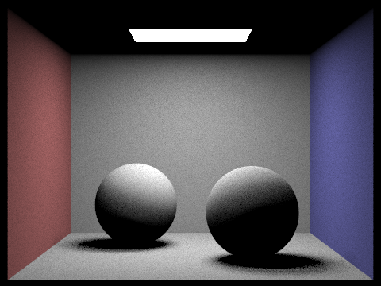
|
|
|
|
|
|
|
Part 4: Indirect Illumination
Unfortunately, images rendered with only direct lighting look a little off. This is because they do not properly incorporate the light rays bouncing off of surfaces and better illuminating the scene. Now, we will implement and include indirect illumination, which will recursively trace light rays throughout the scene to get a more realistically illuminated final image.
Implementing indirect illumination is somewhat similar to direct illumination, but this time we need to recursively generate and trace rays up to a certain depth. In addition, we need to introduce some randomness in deciding when to terminate the bouncing light rays, or else we will infinitely recurse to the point where the marginal utility of following an additional light ray bounce adds no noticeable difference to the resulting image.
First, we will sample the hit point's BSDF using the BSDF::sample_f function to get a sample w_in vector in object space along with its corresponding pdf. Using the returned BSDF spectrum (which represents how much of the incoming radiance should be reflected in the outgoing radaince), we compute its reflectance value by calling Spectrum::illum. This is an effective value to use to decide whether or not we want to randomly terminate the ray: the less reflectance this point has, the more likely we will want to terminate it, since it will not contribute as much to the total indirect illumination. To perform this random termination, we use the Russian roulette method by terminating the ray (i.e. returning a black Spectrum) if a sample from a uniform distribution between [0, 1] is less than 1 minus the point's illumination. However, if we use the point's illumination directly, the value will be pretty low, so Russian roulette will terminate a little too frequently for our liking. As such, we multiply the returned illumination by a factor of 20 and then clamp the value between 0 and 1 before using Russian roulette as described above.
If the ray is not randomly terminated, we create a new recursive ray pointing in the direction of the sampled w_in vector with its origin offset by some small epsilon from the hitpoint and depth decreased by 1 relative to the last ray. It is important that we decrement the depth so that we know when to no longer compute indirect illumination from bouncing light rays within PathTracer::trace_ray. We then recursively trace this ray using PathTracer::trace_ray to compute incoming radiance from that ray due to both direct and indirect illumination. Lastly, we scale the incoming radiance computed recursively by a cosine factor (Lambert's cosine law), the BSDF spectrum returned from the original call to BSDF::sample_f and divide by both the pdf and 1 minus the Russian roulette termination probability (to account for bias introduced from sampling from a probability distribution). This final value is our outgoing radiance for this particular pixel.
With indirect illumination implemented, we can now render some pretty neat images using global illumination. These images look a little more realistic, which is great, but until we implement the BSDFs for some more special materials in Part 5, we can only properly render images with diffuse BSDFs. The following images were rendered using 1024 samples per pixel and 1 sample per area light with maximum ray depth of 100 (Russian roulette termination).
Direct illumination vs. Indirect illumination
Now that we have global illumination working for our PathTracer, let's examine some special cases. For instance, let's compare two different scenes when they have only direct illumination (light only from an area light source) and when they have only indirect illumination (light not from an area light source, but from the camera and from bouncing light rays).
|
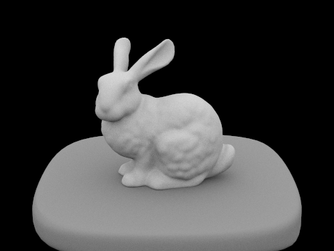
|
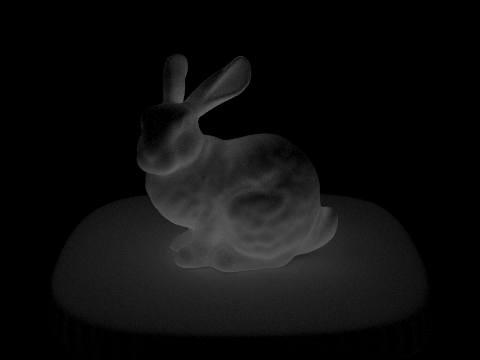
|
|
|
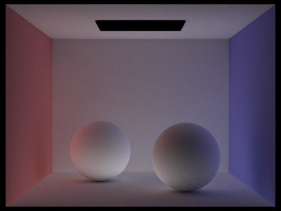
|
Here, I used 1024 samples per pixel and 1 sample per area light with maximum ray depth of 100 (Russian roulette termination). In both example scenes, we notice that the images rendered with only indirect illumination are noticeably darker due to the lack of an area light directly contributing to the illumination. On the other hand, images rendered with only direct illumination are well lit only in the places that are directly hit by the light rays, but are otherwise dark in areas that do not "see" the light (such as beneath the spheres). If we were to "combine" the two images, we would end up with the two images shown in Figures 4-1 and 4-2, which feature global (both direct and indirect) illumination.
Varying the maximum ray depth for indirect illumination
Next, let's revisit the Cornell box with Lambertian spheres and see what happens as we change the maximum ray depth, which is used to recursively "bounce", or trace, rays throughout the scene for indirect illumination. We'll start with maximum ray depth of 1, then look at 2, 3, 4, and 5, before we make a jump to 100 (in which we essentially hand off ray termination to Russian roulette).
|
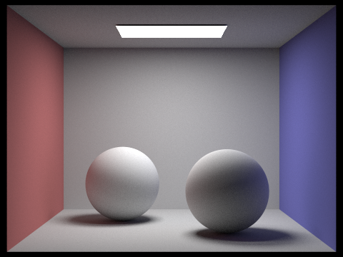
|
|
|
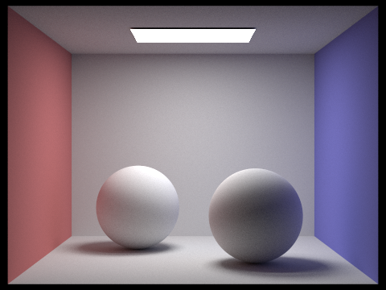
|
|
|
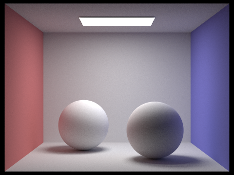
|
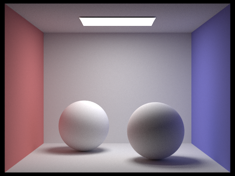
|
In these examples, I used 1024 samples per pixel and 1 sample per area light with varying maximum ray depth. Here, the differences between the varying ray depths aren't quite as noticeable, since the effects of the bouncing rays quickly fall off, especially with diffuse BSDFs. However, some important differences to note are the brightness of the ceiling the darkness of the shadows beneath the spheres. As the maximum ray depth increases, the ceiling gets brighter, due to bouncing light rays returning to the ceiling. At the same time, the shadows beneath the spheres brighten up and absorb more of the color of the red and blue walls near them, due to bouncing light rays from those directions. A similar but less noticeable effect occurs on the sides of the spheres, as they also very slightly grow more colored with increasing ray depth.
Varying the number of samples per pixel for indirect illumination
Lastly, let's examine the effects of varying the number of samples per pixel for indirect illumination. This time, we'll examine the Cornell box with a model of a rabbit at 1, 4, 16, 64, 256, 512, and 1024 samples per pixel.
|
|
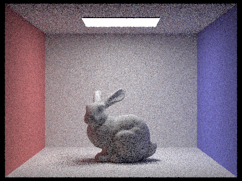
|
|
|
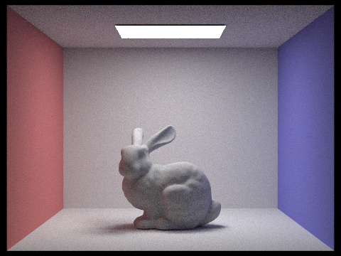
|
|
|
|
In these examples, I used 1 sample per area light and maximum ray depth of 100 (Russian roulette termination). In this case, the relationship between samples per pixel and noise in the image is pretty apparent: the more samples per pixel, the smoother and better the quality of the rendered image is. After around 256 samples per pixel, the improvement becomes very difficult to notice, though you can tell that the ceiling and back wall in the image with 1024 samples per pixel is much smoother than the one in with 256 samples per pixel.
Part 5: Materials
Finally, in Part 5, I added support for mirror-like and glass-like materials in the PathTracer by implementing the BSDF functions for GlassBSDF and MirrorBSDF, which involved implementing the physics behind reflection and refraction.
For starters, I implemented BSDF::reflect, which takes in an output vector and returns the corresponding input vector, assuming perfect specular reflection, such that the angle of incidence is equal to the angle of reflection:
i = 2 * dot(o, n) * n - o
Next, I used this reflect function to implement the MirrorBSDF::sample_f, which takes in an output vector and returns the reflected input vector with its corresponding pdf. This is fairly straightforward, since I simply use the BSDF::reflect function to compute the reflected input vector, set the pdf to 1 (because there is only one possible reflected input vector in perfect specular reflection, we are actually computing the entire integral over the hemisphere; there is no sampling involved), and return the reflectance of the mirror material divided by the Lambert cosine factor. The reason we divide by the Lambert cosine factor here is so that we cancel out the cosine factor introduced in the PathTracer::estimate_indirect_lighting function, which attempts to modulate the incoming radiance by Lambert's cosine factor. However, in this case, we don't want the incoming radiance to be affected by the factor, since all of this light is reflected at the hit point on the surface of the material, without any "fall off". Below, we can see the results of the implemented MirrorBSDF.
The more difficult task was implementing refraction and glass BSDF. To implement BSDF::refract, which takes in an output vector and index of reflection and returns the refracted input vector, I looked to Wikipedia's article on the vector form of Snell's law as a reference. To do this correctly, I made sure that my vectors and their directions matched up with the reference; for instance, I had negate my output vector (which is their light vector), since they assumed their vector was pointing towards the hit point, whereas our BSDF functions assume this vector points outwards from the hit point. Then, I also had to make sure to account for the different scenarios of the ray coming from within the material as opposed to entering from the vacuum (outside the material). With many different checks, I set up my two indices of refraction as well as the relevant vectors correctly, and then performed the calculations to compute the refracted vector. That's it for the basic BSDF::refract logic.
However, not all vectors leaving the glass BSDF will refract; some will go over the critical angle and result in total internal reflection. To figure out whether or not a ray leaving the material will exhibit this kind of behavior, I calculated the ratio between the index of refraction on the inside (n1) over the index of refraction on the outside (n2) times the sin of the angle of incidence:
s = (n1 / n2) * sin(angle of incidence)
If this ratio exceeded 1, then we had total internal reflection. (Side note: this can only occur for a ray coming from inside the glass BSDF and going out into the vacuum). In the case of total internal reflection, we return false from the BSDF::refract function to indicate that we have total internal reflection. Otherwise, we return true with the refracted vector as an additional return value by pointer.
Next, I implemented the GlassBSDF::sample_f function with the help of both the BSDF::reflect and BSDF::refract functions. First, I check to see if the ray experiences total internal reflection as it passes through the surface; if it does, I defer to my BSDF::reflect logic to return the appropriate values.
If the ray does not experience total internal reflection, then it actually experiences a mix of reflection and refraction as it passes through the surface. In reality, the Fresnel equations model the real physics behind this ratio of reflected radiance vs. refracted radiance, but in computer graphics, we will model this behavior using Schlick's approximation. Here, we compute a reflection coefficient R, that we then use an argument to random_util::coin_flip(p), which returns true p is less than some random sample in the interval [0, 1] and false otherwise. Instead of having only some of the light be reflected and some of it be refracted, we use random samples to instead have some of these rays be reflected while other rays are refracted, based on some probability R.
If we choose to reflect, then we do something very similar to total internal reflection, but this time the pdf is R (probability we had chosen to reflect) rather than 1, and we multiply the returned reflectance Spectrum by an additional R to cancel out the effects of the pdf scaling in PathTracer::estimate_indirect_lighting.
If we instead choose to refract, then we defer to the BSDF::refract function we wrote previously to compute the refracted vector. In addition, we set the pdf to be 1 - R (probably we had chosen to refract) and multiply the returned transmittance Spectrum by an additional 1 - R. The reasoning here is analagous to above in the reflection case. In addition to that, we also scale the transmittance by the square of the ratio of the indices of refraction, as per the refraction equation.
Throughout the implementation of GlassBSDF::sample_f, I did my best to keep the vectors straight, such that they would be in the expected form for use in the refraction equations. In addition, I needed to make sure that I never divided a Spectrum by a cosine factor that was negative (which is the case for when the ray comes from inside the material, since the normal vector of the hit point is then on the opposite side). Dividing a Spectrum by a negative value caused me many bugs all throughout, but after I got my negative and positive signs straight, things worked out. Below are some example images of buggy glass spheres due to negative cosine factors and improperly adjusted vector directions.
After a considerable amount of rigorous debugging, I managed to get a working glass BSDF! Now, we are able to render more than just objects with diffuse BSDFs and get some more interesting images.
Varying the maximum ray depth for non-Lambertian materials
Let's again now revisit the Cornell box with a glass and mirror sphere in them and see how the image changes as we slowly increase the maximum ray depth. We'll also take a look at a "fully converged" image with maximum ray depth set to 100, in which Russian roulette takes care of termination of rays.
|
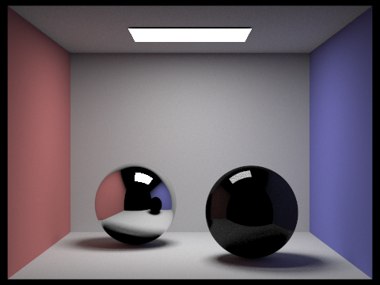
|
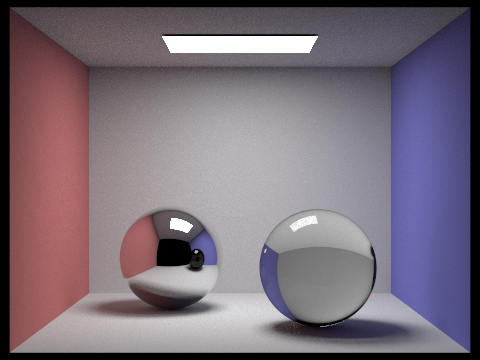
|
|
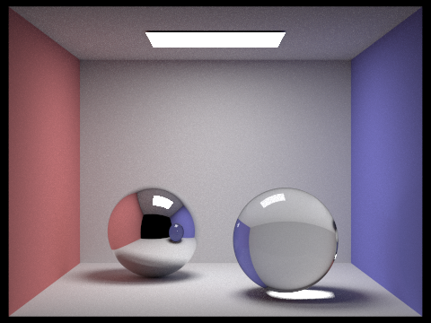
|
|
|
|
|
|
|
In these examples, I used 1024 samples per pixel with 1 sample per area light and varying maximum ray depth to render fairly "high accuracy" images. I find this series of rendered images to be one of the most interesting ones in the the PathTracer assignment, since you can very clearly and intuitively "see" the maximum ray depth's effects.
If we start with maximum ray depth 1, we notice that the glass sphere only really displays reflection and is very dark, since only one bounce of light rays have refracted through it. Similarly, in the mirror sphere, we notice that the ceiling and floor are still pretty dark, again due to the fact that the light rays have only bounced once and so the illumination of the walls and ceilings don't quite "reach" the sphere's reflection yet.
However, if we next look at maximum ray depth 2, we see that the glass sphere now properly refracts the light, as we might expect. This is because the rays that refracted through it from the first bounce, now exit the sphere on the other side and are then properly rendered to the viewer. We also begin to see the slight beginnings of caustics on the bottom right of the glass sphere. Similarly, the mirror sphere now properly reflects (no pun intended, yet again) the lighted ceiling and floor, thanks to the extra ray bounce.
It isn't until we allow for 3 ray bounces that we really see caustics in the rendered image. The light refracted through the glass sphere now appears in the surface beneath the sphere, producing a very brightly lit surface, much like we see when light travels through a glass of water, for instance. In the mirror sphere, the image improves slightly as the ceiling and floor approach their actual colors in the reflection.
Next, with 4 ray bounces, we see a small light on the bottom right corner of the blue wall appear, which is a continuation of the light coming out of the bottom of the sphere that also produces the caustic. The caustic itself contributes to this, since it slightly reflects onto the wall. After this, we don't see much an improvement or change in the image. However, I do want to lastly point out that in the image with 6 ray bounces, a very slight light appears at the top of the sphere. This is the light that comes from the two additional bounces from the light shown on the blue wall: it bounces off the blue wall back into the sphere, and then again back up to the top of the sphere. Between maximum ray depth of 6 and maximum ray depth of 100 for a "fully converged" image, we don't see much difference at all.
Varying the number of samples per pixel for non-Lambertian materials
Next, let's compare what happens to the rendered image when we vary the number of samples per pixel. Here, we start with 1 sample per pixel and gradually increase to 1024 samples per pixel.
|
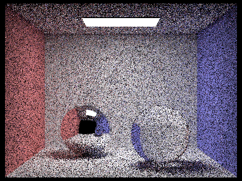
|
|
|
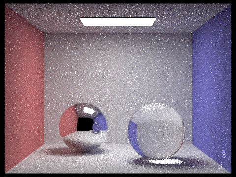
|
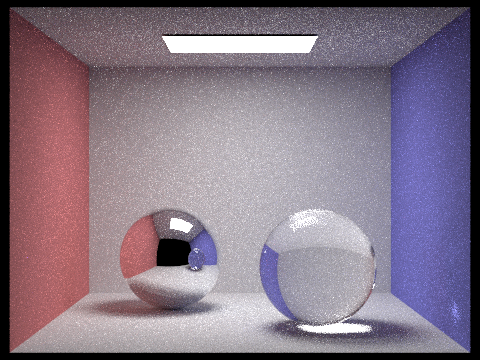
|
|
|
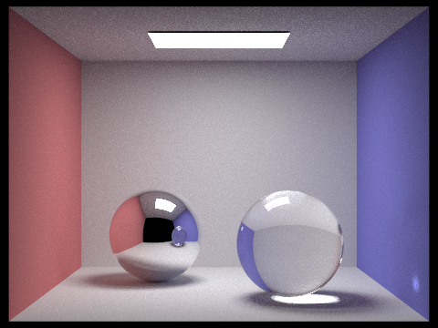
|
|
|
In these examples, I used 1 sample per area light with maximum ray depth of 100 (Russian roulette termination) and varying samples per pixel to observe the effects of the latter. Similar to the images of a bunny in a Cornell box that we saw in Part 4 (indirect illumination), we notice an extreme amount of noise with only a single sample per pixel, which gradually lessens and improves the quality of the image as we increase the number of samples per pixel. The interesting thing to note here is that since we already have a "fully converged" image, all of the reflected, refracted, and caustic features are more or less in the image, albeit noisy depending on the number of samples per pixel. At around 512 samples per pixel, the white noise becomes less noticeable, especially at a distance, and improves ever so slightly as we jump to 1024 samples per pixel. Still, it is fairly easy to notice noise on the ceiling and back wall, if an observer is attentive enough.